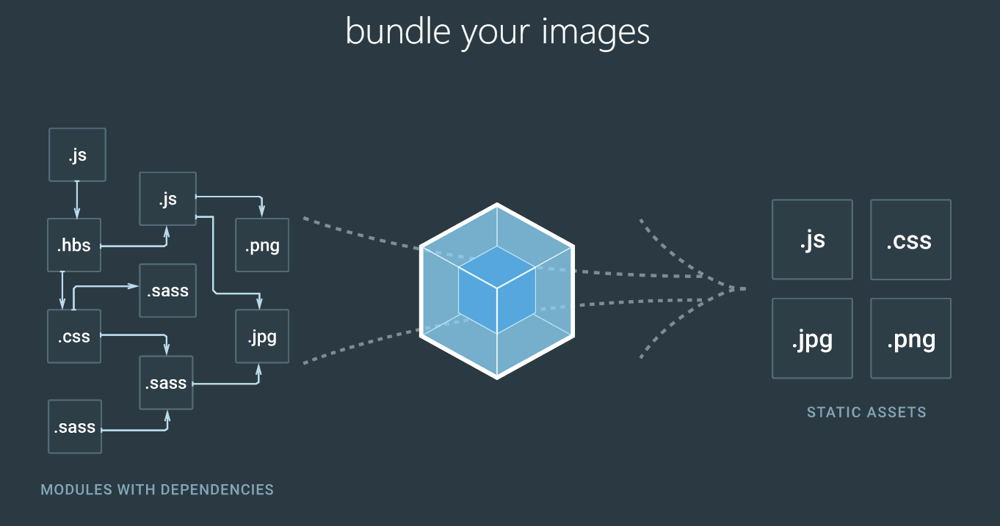

Vue基础-day03
webpack
什么是webpack
webpack 是一个现代 JavaScript 应用程序的模块打包器(module bundler)，分析你的项目结构，找到JavaScript模块以及其它的一些浏览器不能直接运行的拓展语言（Sass，TypeScript等），并将其转换和打包为合适的格式供浏览器使用。

为什么需要webpack
现在的前端，越来越复杂，特别是SPA（single page web application）流行之后，一个应用程序往往会依赖很多其他的模块，或者编译scss、less、stylus等，如果仅仅是靠人来管理是不可能的，这个时候我们必须依赖于webpack来解决。
现在最流行的三个SPA的框架，都于webpack紧密相连。
- React.js + webpack
- Vue.js + webpack
- Angular.js + webpack
学习webpack有4个重点内容：
- 入口(entry)
- 输出(output)
- 加载器(loader)
- 插件(plugins)
webpack安装
注意：请先安装node环境
npm install webpack -g
建议大家这样操作(随时切换镜像源)：
- npm install nrm -g // 安装nrm
- nrm ls // 查看镜像源
- nrm use taobao // 选择淘宝镜像，也可以选择cnpm
使用webpack
01-webpack-cli
使用命令：webpack 输入文件路径 打包后文件路径将一个文件打包成另外一个文件
02-webpack-config
- 配置webpack.config.js
运行
webpackvar path = require('path') module.exports = { // 入口文件配置 entry: "./src/app.js", // 出口文件配置项 output: { // 输出的路径，通常到绝对路径 path: path.join(__dirname, 'dist'), // 输出文件名字 filename: "bundle.js" } }
03-webpack-dev-server
- 安装：
npm install webpack-dev-server -g - 运行：
webpack-dev-server --inline - 运行：
npm init -y - 配置script：
"dev": "webpack-dev-server --inline --hot --open --port 8090" npm i webpack-dev-server webpack -Dnpm run dev
var path = require('path')
module.exports = {
// 入口文件配置
entry: "./src/app.js",
// 输出配置
output: {
// 输出的路径
path: path.join(__dirname, 'dist'),
// 静态资源在服务器上运行时的访问路径，可以直接http://localhost:8080/dist/bundle.js访问到服务器中的bundle.js文件
publicPath: '/dist',
// 输出文件名字
filename: "bundle.js"
}
}
04-webpack-css
- 安装
npm install css-loader style-loader --save-dev
module: {
rules: [
// 配置的是用来解析.css文件的loader(style-loader和css-loader)
{
// 1.0 用正则匹配当前访问的文件的后缀名是 .css
test: /\.css$/,
use: ['style-loader', 'css-loader'] //webpack底层调用这些包的顺序是从右到左
}
]
}
05-webpack-less&webpack-sass
npm install less less-loader sass-loader node-sass --save-dev
{
test: /\.less$/,
use: [{
loader: 'style-loader'
}, {
loader: 'css-loader'
}, {
loader: 'less-loader'
}]
},
{
test: /\.scss$/,
use: [{
loader: 'style-loader'
}, {
loader: 'css-loader'
}, {
loader: 'sass-loader'
}]
}
06-webpack-图片&字体
npm install file-loader url-loader --save-dev
{
test: /\.(png|jpg|gif)/,
use: [{
loader: 'url-loader',
options: {
limit: 50000
}
}]
}
07-webpack-html
npm install html-webpack-plugin --save-dev如果添加了title，需要在模板中添加
<%= htmlWebpackPlugin.options.title %>
// 注意需要注释掉publicPath，不然会冲突
var HtmlWebpackPlugin = require('html-webpack-plugin')
plugins: [
new HtmlWebpackPlugin({
filename: 'index.html',
template: 'template.html'
})
]
08-webpack-babel
npm install babel-core babel-loader babel-preset-env --save-dev
注意：
webpack 1.x | babel-loader <= 6.x
webpack 2.x | babel-loader >= 7.x (推荐) (^6.2.10 也能用, 但是会出现不推荐使用的警告)
webpack 3.x | babel-loader >= 7.1
{
test: /\.js$/,
exclude: /(node_modules)/, // node_modules下面的.js文件会被排除
use: {
loader: 'babel-loader',
// options里面的东西可以放到.babelrc文件中去
options: {
presets: ['env']
}
}
}
// .babelrc文件内的配置
{
"presets":["env"]
}
09-webpack-vue
npm install vue-loader vue-template-compiler --save-devnpm install vue --save
{
test: /\.vue$/,
loader: 'vue-loader'
}
// 如果使用的是webpack1.x，还需要安装 `babel-plugin-transform-runtime`,并添加一下配置；如果是webpack2.x以上请忽略一下配置
{
test: /\.js$/,
exclude: /(node_modules)/, // node_modules下面的.js文件会被排除
use: {
loader: 'babel-loader',
// options里面的东西可以放到.babelrc文件中去
options: {
presets: ['env'],
plugins: ['transform-runtime']
}
}
}
使用vue文件创建vue组件
<!-- App.vue -->
<template>
<div>{{msg}}</div>
</template>
<script>
export default {
data () {
return {
msg: 'hello world'
}
}
}
</script>
<style>
div {
color: red;
}
</style>
// app.js
import Vue from 'vue'
import App from './App.vue'
new Vue({
el: '#app',
render: h=> h(App)
})
vue-router
// app.js
import Vue from 'vue'
import App from './App.vue'
import Login from './Login.vue'
// 1. 引入vue-router
import VueRouter from 'vue-router'
// 2. 表示使用路由插件
Vue.use(VueRouter)
//3. 配置路由规则
var router = new VueRouter({
routes: [
{ name: 'login', path: '/login', component: Login }
]
})
new Vue({
el: '#app',
// 挂载路由
router,
// 这是个渲染函数，指定渲染组件
render: h => h(App)
})
vue-cli
vue-cli是官方的一个脚手架工具，所谓脚手架呢就是一个架子，什么架子呢？项目结构的架子，里面有一些最基本的结构配置。利用vue-cli呢，我们可以生成这样的一个脚手架，所以呢它就被称为vue脚手架工具。
npm install vue-cli -g
vue init webpack admin
element-ui使用简介
安装：npm i element-ui -S
element-ui使用
项目准备
- 码云上创建一个空的项目（不能选readme文件选项）
- 创建本地的git仓库
git init - 将本地仓库关联到远端
git add .git commit -m 'init project'git push(这里有可能报错，按提示 git push --set-upstream origin master)(会提示输入码云的账户密码 )创建并切换到新分支
git checkout -b xx分支git add .git commit -m "xxxx"git push（可能会报错，按照提示push）git checkout mastergit merge xx分支git branch -d xx分支git add .git commit -m "xxx"git push
组件生命周期
<body>
<div id="app">
{{data}}
{{info}}
{{test()}}
<button @click="data='hello1'">更新data</button>
<button @click="info='world2'">更新info</button>
<button @click="destroy">销毁组件</button>
</div>
<script>
var myVm=new Vue({
el:"#app",
data:{
data:"hello",
info:"world!"
},
// 在实例初始化之后，数据观测 (data observer) 和 event/watcher 事件配置之前被调用
beforeCreate:function(){
console.log("beforeCreate========")
console.log("data:", this.data)
console.log(this.$el)
},
// 在实例创建完成后被立即调用。在这一步，实例已完成以下的配置：数据观测 (data observer)，属性和方法的运算，watch/event 事件回调。然而，挂载阶段还没开始，$el 属性目前不可见。
created:function(){
console.log("created========")
console.log("info:", this.info)
console.log(this.$el)
},
// 在挂载开始之前被调用：相关的 render 函数首次被调用。
beforeMount:function(){
console.log("beforeMount========")
console.log("info:", this.info)
console.log(this.$el)
},
// 编译好的模板挂载到vue实例之后调用
mounted:function(){
console.log("mounted========")
console.log("info:", this.info)
console.log(this.$el)
},
// 实例销毁之前调用。在这一步，实例仍然完全可用。
beforeDestroy:function(){
console.log("beforeDestroy========")
console.log("info:", this.info)
console.log(this.$el)
},
// Vue 实例销毁后调用。调用后，Vue 实例指示的所有东西都会解绑定，所有的事件监听器会被移除，所有的子实例也会被销毁。
destroyed:function(){
console.log("destroyed========")
console.log("info:", this.info)
console.log(this.$el)
},
// 数据更新时调用，发生在虚拟 DOM 重新渲染和打补丁之前。
beforeUpdate:function(){
console.log("beforeUpdate========");
},
// 由于数据更改导致的虚拟 DOM 重新渲染和打补丁，在数据更改之后会调用该钩子。
updated:function(){
console.log("updated========");
},
methods: {
test() {
console.log('事件可用')
},
destroy() {
this.$destroy()
},
udpateData() {
this.test()
this.data = 'hello2'
},
updateInfo () {
this.test()
this.info = 'world2'
}
}
})
</script>
</body>